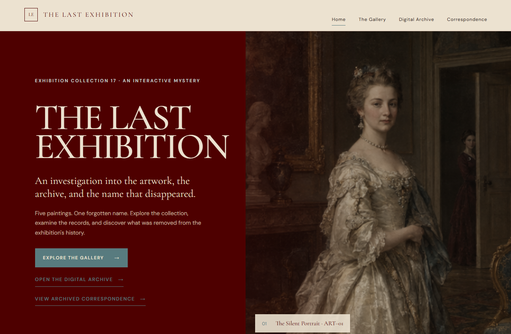

PROJECT 07 · NARRATIVE DESIGN
An interactive digital mystery where players investigate paintings, emails and archive documents to uncover the story of a forgotten female artist.
I designed this individual project as an Alternate Reality Game (ARG), combining visual clues and digital documents to encourage exploration and independent discovery.
Project type: Individual project
Focus: ARG, narrative design, UX design and user testing
Tools: Figma Make and AI tools

Explore the interactive museum mystery and follow the clues hidden in the paintings, emails and digital archive.